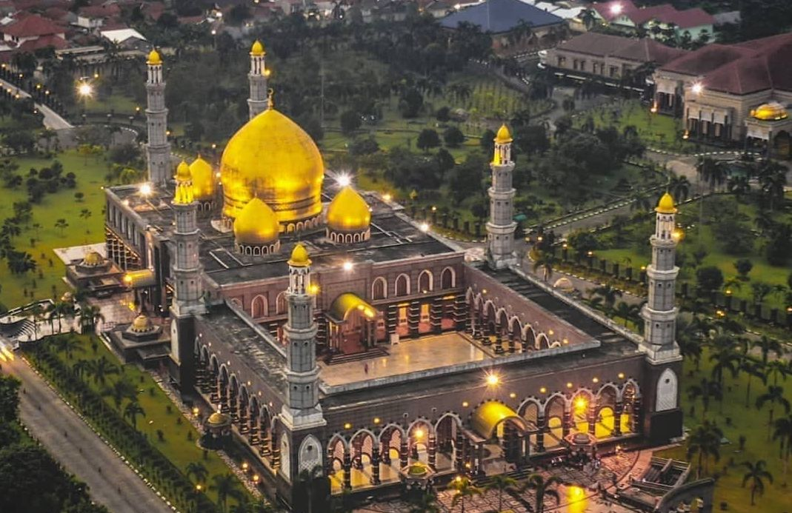

Namanya adalah Masjid Kubah Emas atau Masjid Dian Al Mahri yang menjadi masjid kebanggaan kota Depok. Masjid Kubah Emas memiliki lima kubah yang terdiri dari satu kubah
utama dan empat kubah kecil. Kubah itu dilapisi emas setebal dua sampai tiga milimeter dan mozaik kristal yang memiliki diameter bawah 16 meter, diameter tengah 20 meter, dan tinggi 25 meter.
Sementara, empat kubah kecil memiliki diameter bawah 6 meter, tengah 7 meter, dan tinggi 8 meter. Di dalam masjid terdapat lampu gantung yang didatangkan langsung dari Italia seberat 8 ton.
Relief hiasan di atas tempat imam juga terbuat dari emas 18 karat. Begitu pula pagar di lantai dua dan hiasan kaligrafi di langit-langit masjid itu juga dilapisi emas. Mahkota pilar masjid kubah mas berjumlah 168 buah.
Dengan bahan prado atau sisa emas.
Masjid ini di resmikan pada 31 Desember 2006 dengan desain termegah di kawasan Asia Tenggara. Saat itu, Dian dikenal sebagai pengusaha asal Banten yang membeli tanah pada tahun 1996.
Kemudian masjid mulai dibangun sejak tahun 2001 dan selesai sekitar akhir 2006. Arsitektur masjid ini mengikuti tipologi arsitektur masjid di Timur Tengah dengan ciri kubah, minaret (menara), halaman dalam (plaza), dan penggunaan detail atau hiasan dekoratif dengan elemen geometris dan obelisk untuk memperkuat ciri keislaman para arsitekturnya. Ciri lainnya adalah gerbang masuk berupa portal dan hiasan geometris serta obelisk sebagai ornamen. Enam menara (minaret) di Masjid Kubah Emas yang berbentuk segi enam atau heksagonal melambangkan rukun iman. Keenam menara itu dibalut batu granit abu-abu yang
diimpor dari Italia dengan ornamen melingkar. Pada puncaknya terdapat kubah berlapis mozaik emas 24 karat, sedangkan kubahnya mengacu pada bentuk kubah yang banyak digunakan masjid-masjid di Persia dan India.
Masjid Kubah Emas berada di jalan Raya Maruyung, Limo Depok. Setiap harinya selalu ramai dengan para jemaah baik dari warga sekitar ataupun pengunjung dari luar Depok.
Alamat : Jl. Raya Meruyung, Meruyung, Kec. Limo, Kota Depok Jawa Barat 16515

Masjid ini memiliki daya tarik tersendiri ya bagi wisatawan untuk menunaikan Shalat atau melihat bangunan masjid yang megah. Masjid ini selalu ramai ya, saya senang melihatnya.

Lebih tepatnya, mereka yang datang kesini tak hanya untuk beribadah tapi juga untuk wisata religi ya kalau menurut aku. Masjid ini juga berasitektur cantik dan megah banget.

Menurut saya, masjid ini bukan hanya tempat ibadah saja ya tetapi untuk wisata religi juga karena banyak wisatawan dari berbagai wilayah ya. Baik itu dari pulau Jawa atau luar Jawa.
Develop By Kelompok 7 TI-05 @STT NF